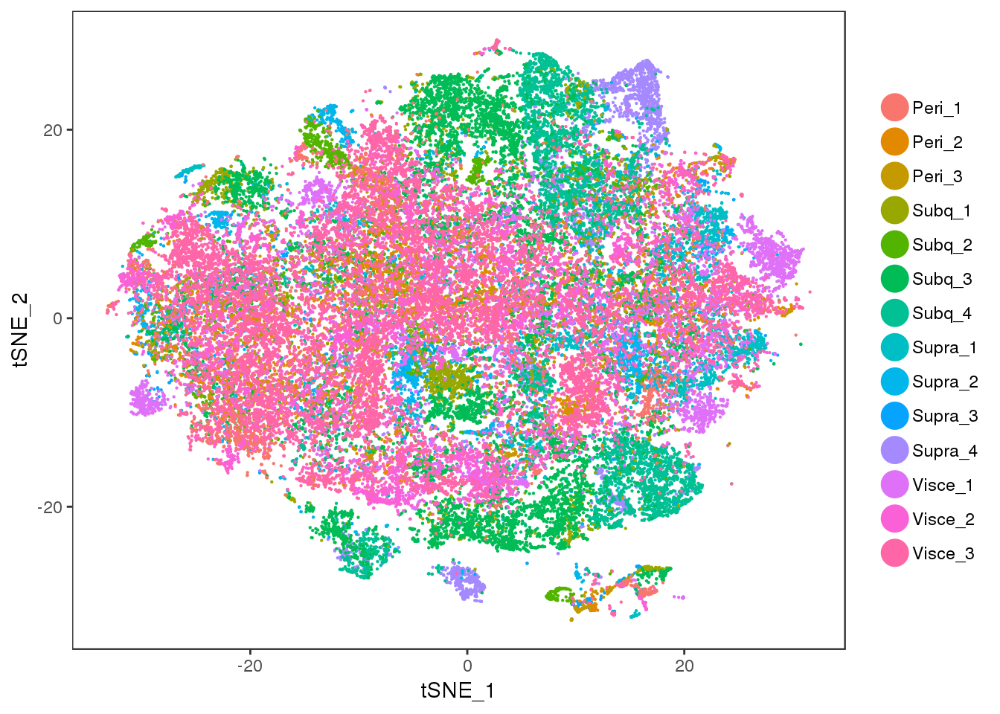
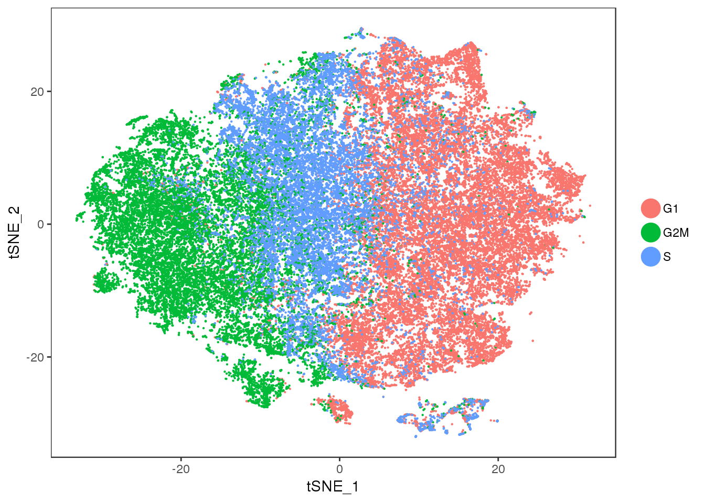
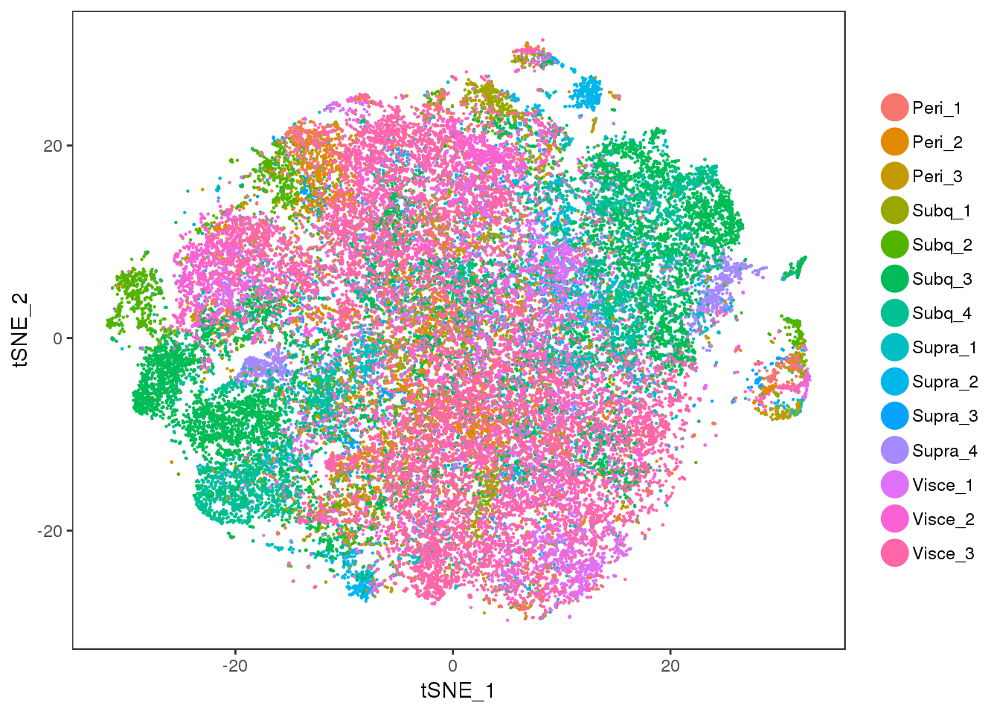
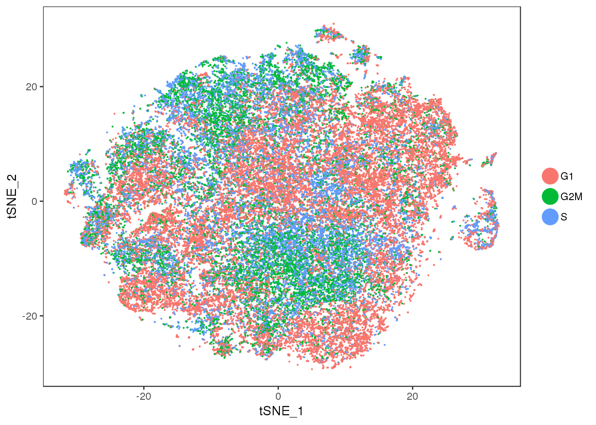
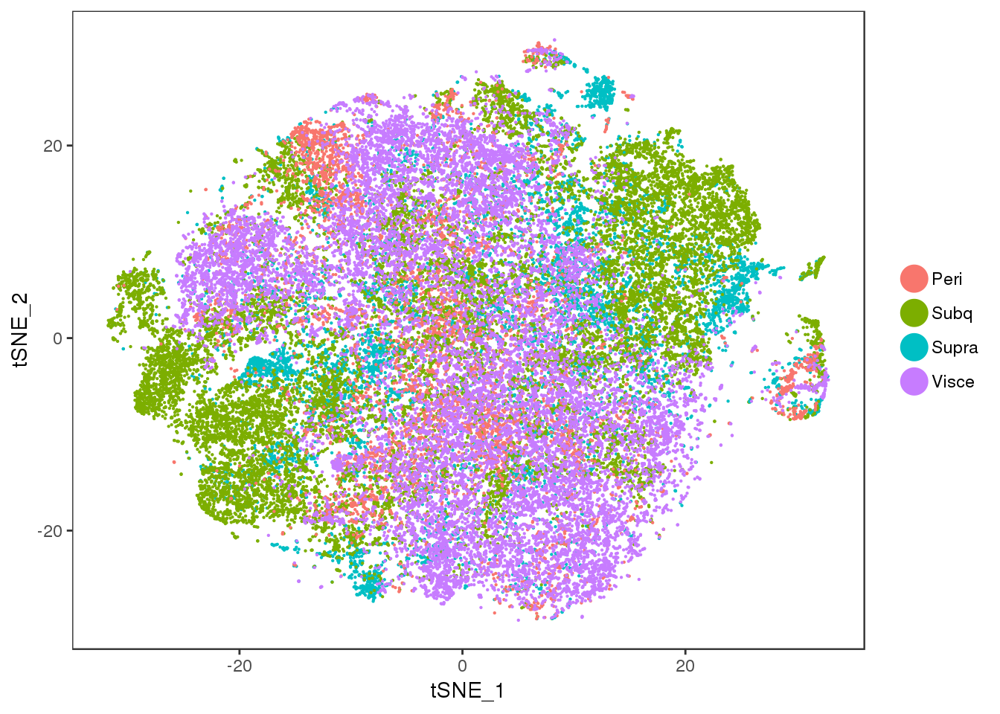
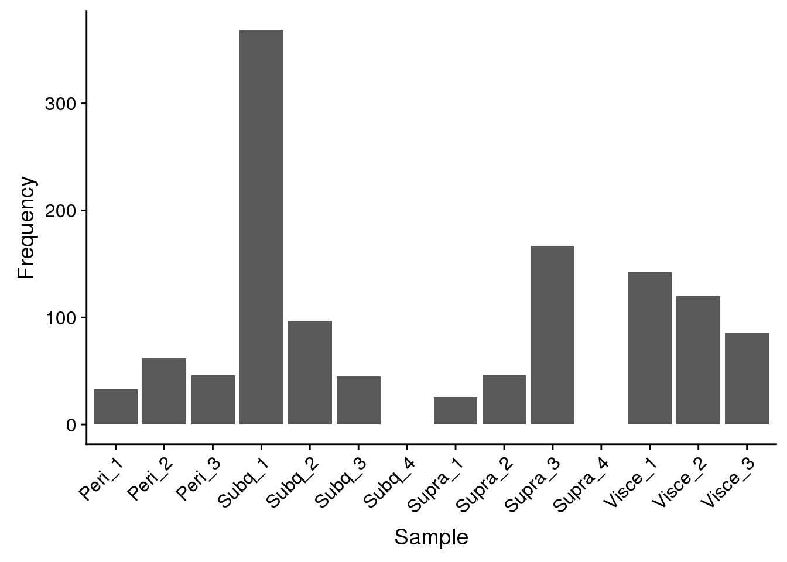
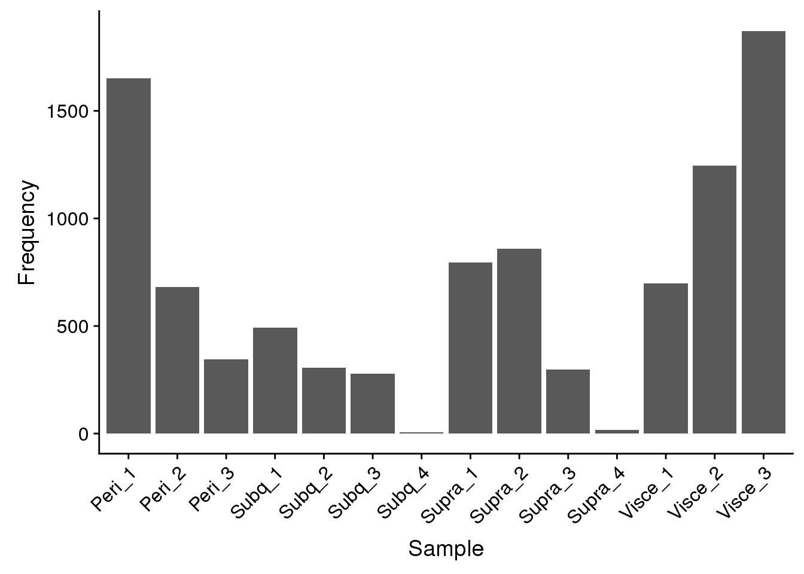
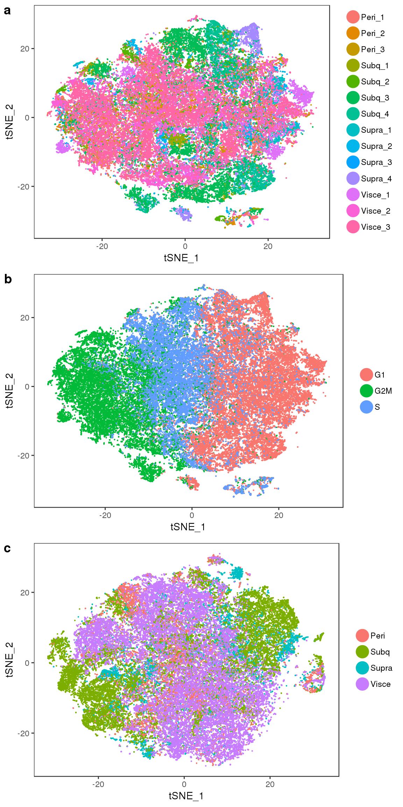
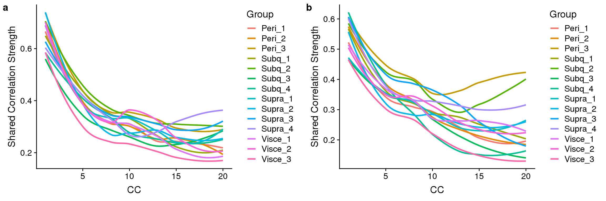
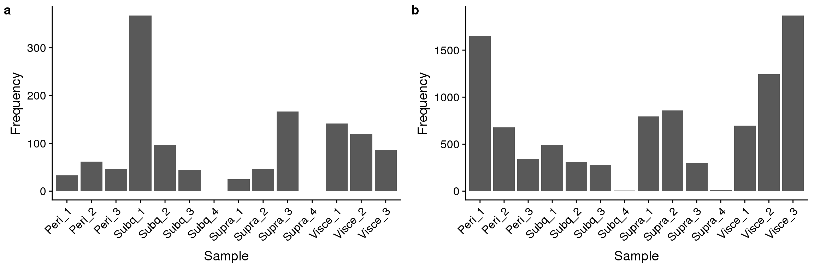

Last updated: 2018-11-07
workflowr checks: (Click a bullet for more information) ✔ R Markdown file: up-to-date
Great! Since the R Markdown file has been committed to the Git repository, you know the exact version of the code that produced these results.
✔ Environment: empty
Great job! The global environment was empty. Objects defined in the global environment can affect the analysis in your R Markdown file in unknown ways. For reproduciblity it’s best to always run the code in an empty environment.
✔ Seed:
set.seed(20181026)
The command set.seed(20181026) was run prior to running the code in the R Markdown file. Setting a seed ensures that any results that rely on randomness, e.g. subsampling or permutations, are reproducible.
✔ Session information: recorded
Great job! Recording the operating system, R version, and package versions is critical for reproducibility.
✔ Repository version: 1c178af
wflow_publish or wflow_git_commit). workflowr only checks the R Markdown file, but you know if there are other scripts or data files that it depends on. Below is the status of the Git repository when the results were generated:
Ignored files:
Ignored: output/monocle/
| File | Version | Author | Date | Message |
|---|---|---|---|---|
| Rmd | 1c178af | PytrikFolkertsma | 2018-11-07 | wflow_publish(c(“analysis/10x-180504-alignment.Rmd”, “analysis/10x-180504-beforeQC.Rmd”, |
| html | 9e51a0a | PytrikFolkertsma | 2018-11-02 | Build site. |
| html | eaa7e4a | PytrikFolkertsma | 2018-11-02 | Build site. |
| Rmd | b8a734f | PytrikFolkertsma | 2018-11-02 | wflow_publish(c(“analysis/index.Rmd”, “analysis/10x-180504-alignment.Rmd”, |
| Rmd | 120215c | PytrikFolkertsma | 2018-11-02 | general analysis + alignment |
Notebook for alignment analsyis of the 180504 data.
library(Seurat)
library(ggplot2)Lading the datasets.
load('output/10x-180504-aligned-metageneplot') #contains biweight midcorrelation plots: p1 and p2
all10x.aligned <- readRDS('output/10x-180504-aligned')
all10x.aligned.ccregout <- readRDS('output/10x-180504-ccregout-aligned')
all10x.aligned.discardedcells <- readRDS('output/10x-180504-cca-discardedcells')
all10x.ccregout.aligned.discardedcells <- readRDS('output/10x-180504-ccregout-cca-discardedcells')Alignment of the data with and without cell cycle effects regressed out. Both were aligned on 30 subspaces, tSNE was performed on the first 15 CCs.
tSNE of the aligned data.
TSNEPlot(all10x.aligned, group.by='sample_name', pt.size=0.1)
| Version | Author | Date |
|---|---|---|
| eaa7e4a | PytrikFolkertsma | 2018-11-02 |
tSNE of the aligned data coloured on cell cycle phase.
TSNEPlot(all10x.aligned, group.by='Phase', pt.size=0.1)
| Version | Author | Date |
|---|---|---|
| eaa7e4a | PytrikFolkertsma | 2018-11-02 |
tSNE of the aligned data with cell cycle effects regressed out.
TSNEPlot(all10x.aligned.ccregout, group.by='sample_name', pt.size=0.1)
| Version | Author | Date |
|---|---|---|
| eaa7e4a | PytrikFolkertsma | 2018-11-02 |
tSNE of the aligned data with cell cycle effects regressed out, colored by phase.
TSNEPlot(all10x.aligned.ccregout, group.by='Phase', pt.size=0.1)
| Version | Author | Date |
|---|---|---|
| eaa7e4a | PytrikFolkertsma | 2018-11-02 |
tSNE of the aligned data with cell cycle effects regressed out, colored by subtissue
TSNEPlot(all10x.aligned.ccregout, group.by='depot', pt.size=0.1)
| Version | Author | Date |
|---|---|---|
| eaa7e4a | PytrikFolkertsma | 2018-11-02 |
Before aligning the samples, sample-specific cells were discarded. Below: discarded cells from normal alignment.
discarded <- as.data.frame(table(all10x.aligned.discardedcells@meta.data$sample_name))
names(discarded) <- c('Sample', 'Frequency')
p_discarded <-ggplot(data=discarded, aes(x=Sample, y=Frequency)) +
geom_bar(stat="identity") +
theme(axis.text.x = element_text(angle=45, hjust=1))
p_discarded
| Version | Author | Date |
|---|---|---|
| eaa7e4a | PytrikFolkertsma | 2018-11-02 |
Discarded cells from alignment with cell cycle effects regressed out.
discarded.ccregout <- as.data.frame(table(all10x.ccregout.aligned.discardedcells@meta.data$sample_name))
names(discarded.ccregout) <- c('Sample', 'Frequency')
p_discarded.ccregout <-ggplot(data=discarded.ccregout, aes(x=Sample, y=Frequency)) +
geom_bar(stat="identity") +
theme(axis.text.x = element_text(angle=45, hjust=1))
p_discarded.ccregout
| Version | Author | Date |
|---|---|---|
| eaa7e4a | PytrikFolkertsma | 2018-11-02 |
fig1
| Version | Author | Date |
|---|---|---|
| eaa7e4a | PytrikFolkertsma | 2018-11-02 |
Biweight midcorrelation plots.
sfig1 <- plot_grid(
p1,
p2,
labels=c('a', 'b'),
nrow=1
)`geom_smooth()` using method = 'loess' and formula 'y ~ x'
`geom_smooth()` using method = 'loess' and formula 'y ~ x'save_plot("plots/supplementary_figures/sfig_180504_biweightplots.pdf", sfig1, base_width=12, base_height=4)
sfig1
| Version | Author | Date |
|---|---|---|
| eaa7e4a | PytrikFolkertsma | 2018-11-02 |
Discarded cells.
sfig2 <- plot_grid(
p_discarded,
p_discarded.ccregout,
labels=c('a', 'b'),
nrow=1
)
save_plot("plots/supplementary_figures/sfig_180504_alignment-discardedcells.pdf", sfig2, base_width=12, base_height=4)
sfig2
| Version | Author | Date |
|---|---|---|
| eaa7e4a | PytrikFolkertsma | 2018-11-02 |
sessionInfo()R version 3.4.3 (2017-11-30)
Platform: x86_64-redhat-linux-gnu (64-bit)
Running under: Red Hat Enterprise Linux
Matrix products: default
BLAS/LAPACK: /usr/lib64/R/lib/libRblas.so
locale:
[1] LC_CTYPE=en_US.UTF-8 LC_NUMERIC=C
[3] LC_TIME=en_US.UTF-8 LC_COLLATE=en_US.UTF-8
[5] LC_MONETARY=en_US.UTF-8 LC_MESSAGES=en_US.UTF-8
[7] LC_PAPER=en_US.UTF-8 LC_NAME=C
[9] LC_ADDRESS=C LC_TELEPHONE=C
[11] LC_MEASUREMENT=en_US.UTF-8 LC_IDENTIFICATION=C
attached base packages:
[1] stats graphics grDevices utils datasets methods base
other attached packages:
[1] Seurat_2.3.4 Matrix_1.2-14 cowplot_0.9.3 ggplot2_3.0.0
loaded via a namespace (and not attached):
[1] Rtsne_0.13 colorspace_1.3-2 class_7.3-14
[4] modeltools_0.2-22 ggridges_0.5.0 mclust_5.4.1
[7] rprojroot_1.3-2 htmlTable_1.12 base64enc_0.1-3
[10] rstudioapi_0.7 proxy_0.4-22 flexmix_2.3-14
[13] bit64_0.9-7 mvtnorm_1.0-8 codetools_0.2-15
[16] splines_3.4.3 R.methodsS3_1.7.1 robustbase_0.93-2
[19] knitr_1.20 Formula_1.2-3 jsonlite_1.5
[22] workflowr_1.1.1 ica_1.0-2 cluster_2.0.7-1
[25] kernlab_0.9-27 png_0.1-7 R.oo_1.22.0
[28] compiler_3.4.3 httr_1.3.1 backports_1.1.2
[31] assertthat_0.2.0 lazyeval_0.2.1 lars_1.2
[34] acepack_1.4.1 htmltools_0.3.6 tools_3.4.3
[37] bindrcpp_0.2.2 igraph_1.2.2 gtable_0.2.0
[40] glue_1.3.0 RANN_2.6 reshape2_1.4.3
[43] dplyr_0.7.6 Rcpp_0.12.18 trimcluster_0.1-2.1
[46] gdata_2.18.0 ape_5.1 nlme_3.1-137
[49] iterators_1.0.10 fpc_2.1-11.1 gbRd_0.4-11
[52] lmtest_0.9-36 stringr_1.3.1 irlba_2.3.2
[55] gtools_3.8.1 DEoptimR_1.0-8 MASS_7.3-50
[58] zoo_1.8-3 scales_1.0.0 doSNOW_1.0.16
[61] parallel_3.4.3 RColorBrewer_1.1-2 yaml_2.2.0
[64] reticulate_1.10 pbapply_1.3-4 gridExtra_2.3
[67] rpart_4.1-13 segmented_0.5-3.0 latticeExtra_0.6-28
[70] stringi_1.2.4 foreach_1.4.4 checkmate_1.8.5
[73] caTools_1.17.1.1 bibtex_0.4.2 Rdpack_0.9-0
[76] SDMTools_1.1-221 rlang_0.2.2 pkgconfig_2.0.2
[79] dtw_1.20-1 prabclus_2.2-6 bitops_1.0-6
[82] evaluate_0.11 lattice_0.20-35 ROCR_1.0-7
[85] purrr_0.2.5 bindr_0.1.1 labeling_0.3
[88] htmlwidgets_1.2 bit_1.1-14 tidyselect_0.2.4
[91] plyr_1.8.4 magrittr_1.5 R6_2.2.2
[94] snow_0.4-2 gplots_3.0.1 Hmisc_4.1-1
[97] pillar_1.3.0 whisker_0.3-2 foreign_0.8-71
[100] withr_2.1.2 fitdistrplus_1.0-9 mixtools_1.1.0
[103] survival_2.42-6 nnet_7.3-12 tsne_0.1-3
[106] tibble_1.4.2 crayon_1.3.4 hdf5r_1.0.0
[109] KernSmooth_2.23-15 rmarkdown_1.10 grid_3.4.3
[112] data.table_1.11.4 git2r_0.23.0 metap_1.0
[115] digest_0.6.16 diptest_0.75-7 tidyr_0.8.1
[118] R.utils_2.7.0 stats4_3.4.3 munsell_0.5.0 This reproducible R Markdown analysis was created with workflowr 1.1.1